我的成功只依赖两条：一条是毫不动摇地坚持到底；一条是用手把脑子里想出的图形一丝不差地制造出来。
——法国数学家蒙日
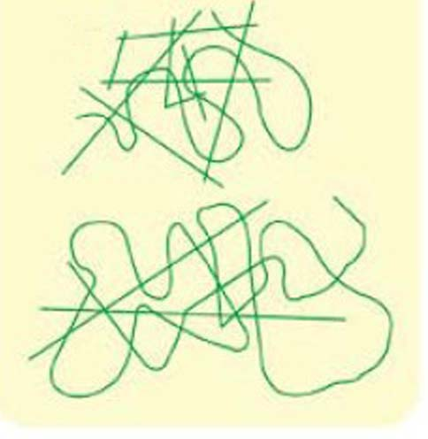
例图中可以看见一个数字4，下图中也可以找到和这个4的形状大小完全一致的4吗？请找找看。
猜一猜，图中的各部分组合起来，可以拼成数字几呢？（提示：可把本页复印后剪下来拼拼看）
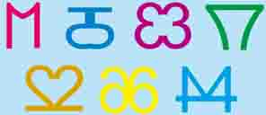
图中这些奇怪的符号意味着什么呢？
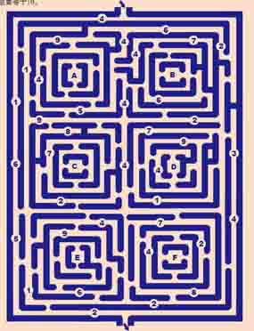
请从顶端的入口进入迷宫，然后按字母顺序从A走到F。每走到一个字母时，你所经过的数字相加必须等于10（不可以相减），从离开字母F到走出迷宫时，所经过的数字之和也要等于10。
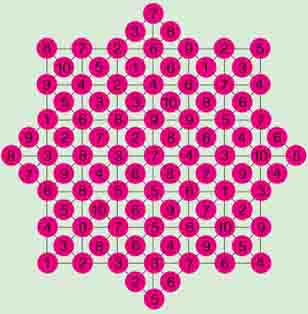
在如图所示的这些乱糟糟的数字中，你能找到一条可以经过从1到10所有数字的路线吗？这些数字必须是连续的。（提示：请用笔描一描）
下图中，少了哪一块图案呢？
下图中隐藏着一个漂亮的五角星，你发现了吗？
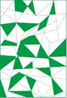
左图中有三个水杯，你能在图中添加一笔，使图中共有五个水杯吗？
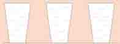
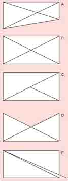
下列图形中，哪一个是与众不同的？
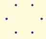
如下图排列的六个点，在不交叉的情况下，你最多可以画出几条两点互相连接的线？（提示：并不要求是直线的）
怎样用两条直线把下面的月牙分成六个部分？
下图中，圆点出现在多少个圆圈中呢？
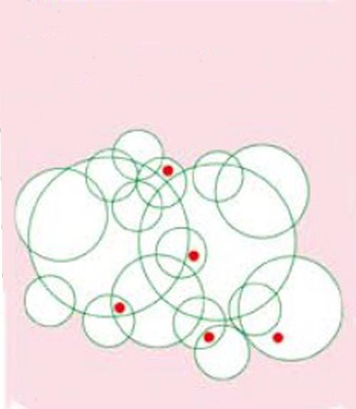
例图中钥匙经过翻转后得到（ ）。
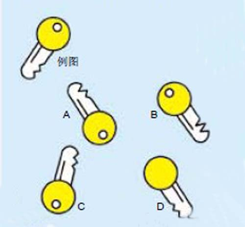
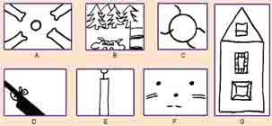
偶尔换一个角度看世界你会发现另一片天空。下面是一组简单却很神奇的图画，你能猜出它们到底是什么吗？
下面哪一个图形与其他的几个明显不同，请圈出来。
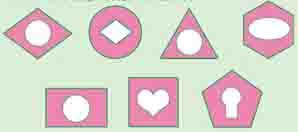
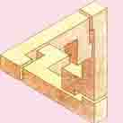
图中的几何体看似平常，却隐藏着惊人的秘密，你发现了吗？
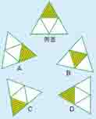
例图经过翻转后得到的三角形是（ ）。
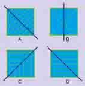
观察下列四幅图形的特点，从中找出与众不同的一幅。
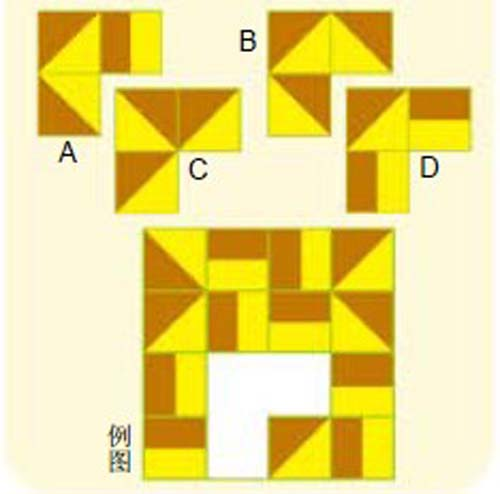
A～D四个图格，哪个适合填在例图空白处？
下面是一些中国历史上最经典的智力玩具，这些玩具中都包含着丰富的数学原理，你知道它们的名称吗？
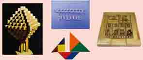
下面各图中，哪一项是与众不同的？
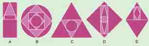
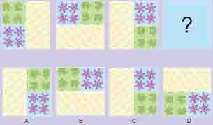
问号处应为什么图像？
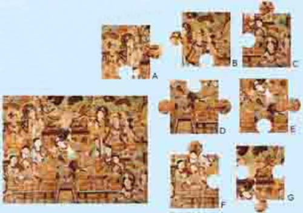
七块拼图板中，哪一块是多余的，你知道吗？
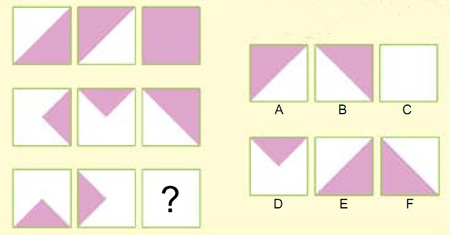
分析下列图形的排列规律，找出能替代问号的图形。
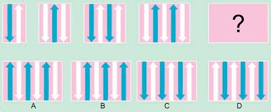
分析下列图形的排列规律，找出能替代问号的图形。
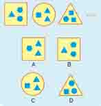
观察下面的图案序列，你能看出下面哪一项可以接续其后吗？
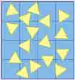
长方形上有不少美丽的三角形图案，请画一条直线将长方形分成两部分，使每部分的面积、形状和所包括三角形的数量都相等。
仔细观察图中这辆普通的双层公共汽车，已知公共汽车的两边都有乘客，有的刚下车，有的则准备上车。你知道图中的公共汽车是朝哪边开的吗？
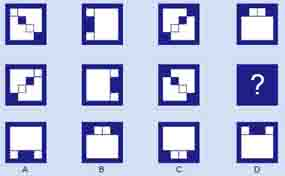
办公室地面的地砖是按照一定规律铺上的，每八块地砖组成一个循环。图中问号处应该铺哪一块地砖呢？
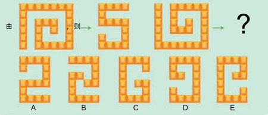
问号处应该放哪一种瓷砖拼图呢？
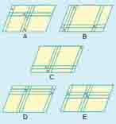
哪块瓷砖有别于其他四块？
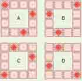
下面是一位艺术家房间里的四面墙的示意图，其中有一面墙是与众不同的，你能找出来吗？
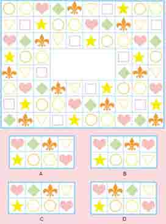
一块印有美丽的几何图案的地毯缺了一块，你知道是哪一块吗？
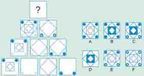
问号处应为什么图形？
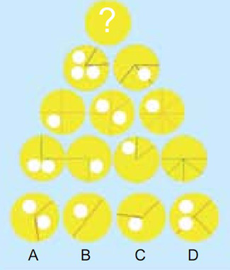
根据图中的规律，问号处填哪个图形最适合？
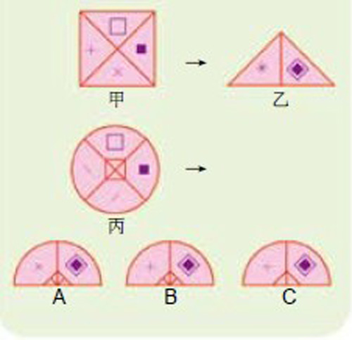
如果由甲可以推演出乙，那么由丙可以推演出哪个图？
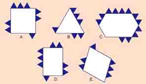
下面哪个图与其他图不相称？
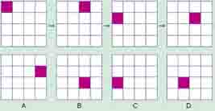
在下面网格序列中，下一个应该出现的网格是哪个？
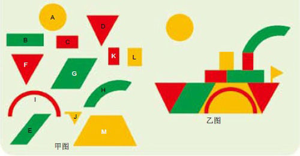
甲图的图形组合起来，可以拼成乙图的那条船。但甲图中有一块拼板是多余的，你知道是哪一块吗？
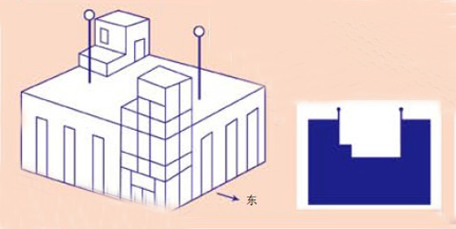
小王给左图中的建筑物拍了一张照片。但是因为照相技术不佳，照片冲出来后，上面的建筑物显得漆黑一片。请仔细地观察照片和建筑物，猜一猜小王是从哪个方向拍的照片。
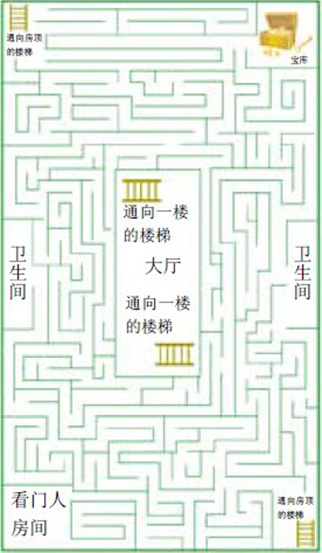
从庞贝古城的遗迹中，发掘出了一系列奇特的建筑物。一边参观，导游一边给我讲述这样一个故事：这里有一个很奇特的迷宫。在一个像是富豪宅第的二层楼建筑物遗迹里，二楼有一个宝库。这个迷宫似乎是为了不让小偷靠近宝库而设计的。但是，当发生情况时，看门的人怎样才能以最快速度从看门人房间跑到宝库呢？
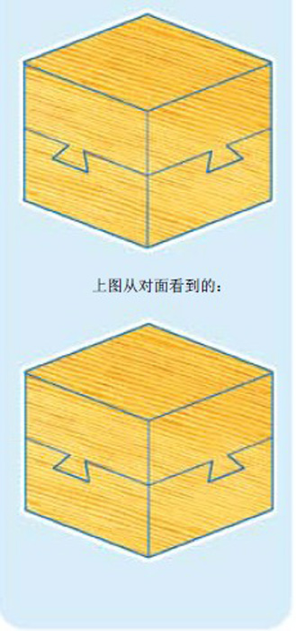
如图这样组合在一起的木块，有可能不毁坏木块就使上下两层分离吗？当然，结合部位并没有用强力粘结剂粘起来。
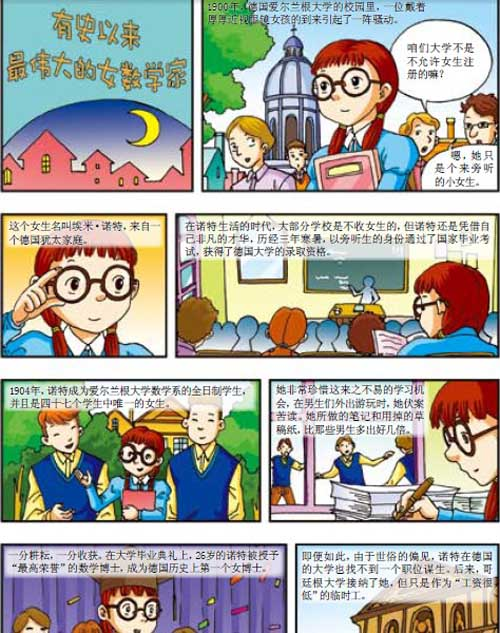
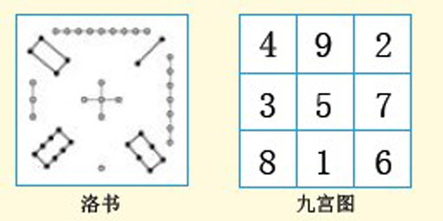
洛书和幻方在我国古老的《易经》中有这样一句话：“河出图，洛出书，圣人则之。”
相传在舜帝时代，大禹治水来到洛水，洛水中浮起一只神龟，龟甲上有黑白四十五点构成一张图，点由直线连成九数，后人称之为“洛书”，把这张图用数字表达就是下面的数表，其任意横、竖、斜各条直线上的三个数之和均相等（等于15）。
中国南宋时期数学著作《数术拾遗》记载了上述源自“洛书”的方图，当时称为“九宫图”，我国南宋数学家杨辉称这种图为纵横图，欧洲人则称之为魔术方阵或幻方。
华容道
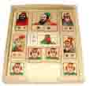
华容道是一种古老的中国玩具，以其变化多端、百玩不厌的特点与魔方、独立钻石棋一起被国际智力专家称为“智力游戏界的三个不可思议”。
华容道游戏取材于著名的三国故事，曹操在赤壁大战中被刘备和孙权打败，被迫退逃到华容道，又遇上关羽的伏兵，关羽为了报答曹操昔日的恩情，明逼实让，终于帮助曹操逃出了华容道。游戏就是依照这一故事情节，通过移动各个棋子，帮助曹操从初始位置移到棋盘最下方中部，从出口逃走。不允许跨越棋子，还要设法用最少的步数把曹操移到出口。
华容道玩具有一个带二十个小方格的棋盘，代表华容道。棋盘下方有一个两方格边长的出口，是供曹操逃走的。棋盘上共摆有十个大小不一样的棋子，它们分别代表曹操、张飞、赵云、马超、黄忠和关羽，还有四个卒。棋盘上仅有两个小方格空着，玩法就是通过这两个空格移动棋子，用最少的步数把曹操移出华容道。这个玩具引起过许多人的兴趣，大家都力图把移动的步数减到最少。